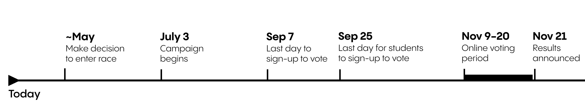
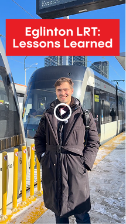

The first weeks have been energizing. Hundreds of people have signed up on our website, and many have also taken our issues survey there. If you haven’t yet, I’d love to welcome you to my daily noon office hours Q&A. You can join straight from the website. It’s the easiest way to ask a question, share what you’re hearing, or tell me directly what you think we need to do next.
I am excited to share Melody Kuo is now on full time as Campaign Manager, and we’ll be bringing on Devon Monkhouse as CFO and Deputy Campaign Manager. We’re building this plane in real time, and it’s coming together fast.
A November Leadership Election

Over the weekend, the Ontario Liberal Party released the rules for the leadership election:
- Officially starts July 3rd, 2026
- You can vote any time between Nov 9–20
- Voting will take place online
- You must be an OLP member to be eligible to vote. The last day to sign-up is Sep 7 (with an extended deadline of Sep 25 for post-secondary students).
This timeline gives us real time to engage campuses in September. Young people have borne the brunt of public policy failure in Ontario over the last few decades, so I’m glad the party is prioritizing student participation.
This campaign will remain exploratory for the next several months, with a go or no go decision sometime in May. So stay tuned!
The Delayed Train Left The Station
On Sunday, Melody and I checked out the new Eglinton Crosstown LRT, Line 5. Anyone who has followed my work for a while knows Ontario’s infrastructure cost disease is my mortal enemy. This project was first conceived in the 2000s as roughly a 5 billion dollar build, procured for about 9 billion, and ultimately landed around 13 billion, roughly six years behind schedule.
In the video, we get into the details, but the core point is simple. Ontario has to relearn how to build. I am excited to put forward a serious reform agenda to bring costs down, timelines in, and confidence back. You can watch the clip on my socials:

How you can help
I’m grateful for the offers to volunteer and support financially. Give us a week or two to get organized and we’ll follow up with clear next steps. Right now, our two priorities are volunteer identification and fundraising.
If you or someone you know has serious subject matter and policy expertise, or might be interested in hosting a fundraising event or becoming a major donor, please reply to this email. I’d love to connect.
If you’re looking for other ways to get involved:
- Tell a friend: Share this with friends, family, neighbours, and coworkers, and encourage them to sign up at EricForOLP.ca.
- Join a call: I host small group calls every weekday at noon. Come ask me anything and tell me what issues matter to you. You can join from the website.
- Like and comment on socials: It sounds small, but it makes a big difference in getting our posts seen. I’m on Instagram, TikTok, Facebook, Bluesky, and X.